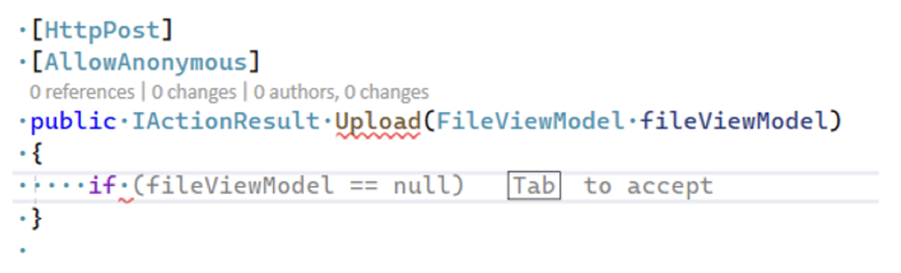
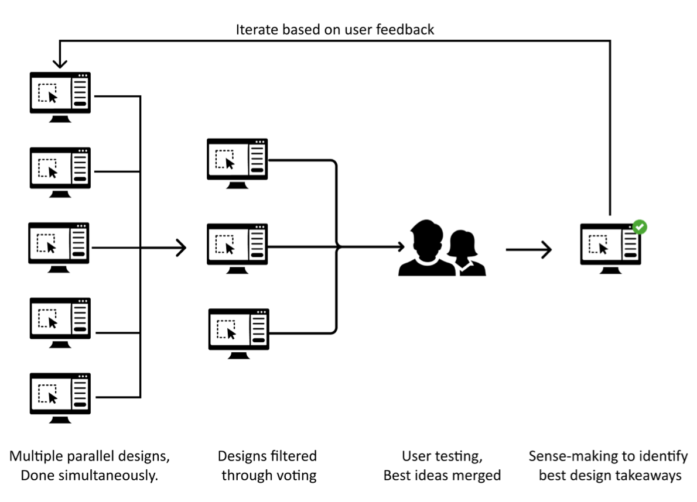
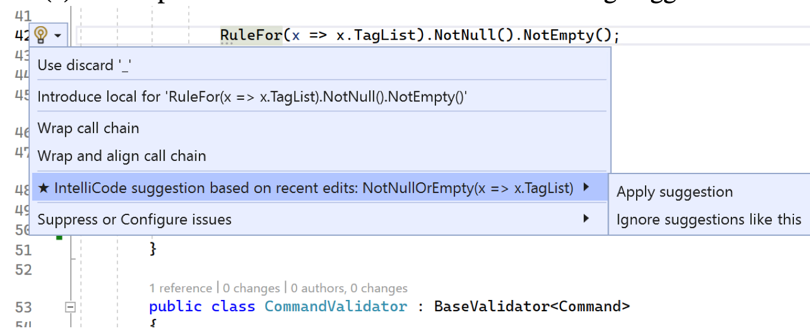
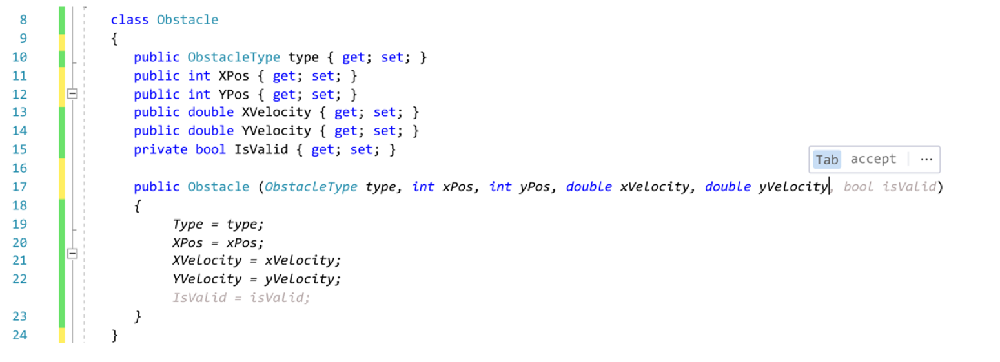
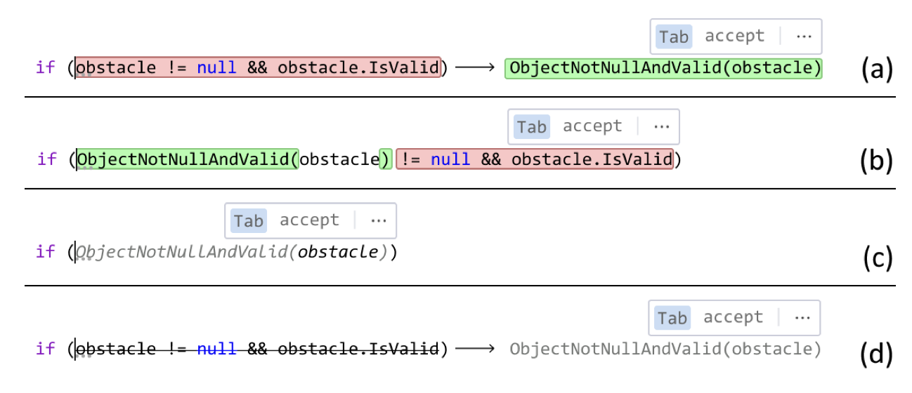
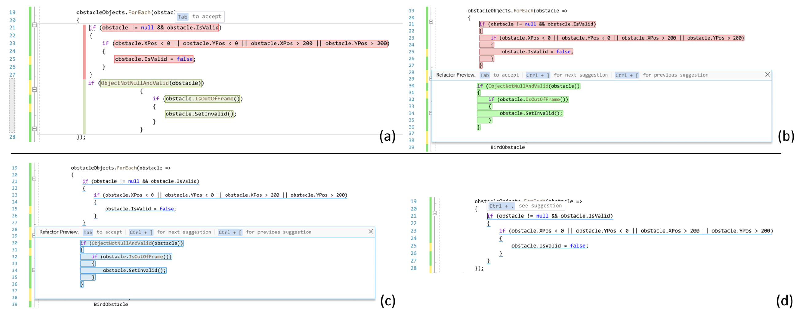

I work on AI + developer tools.
This post is a summary of our ICSE-SEIP'23 paper, "Towards More Effective AI-Assisted Programming: A Systematic Design Exploration to Improve Visual Studio IntelliCode's User Experience". See the paper for more details. Thanks to Priyan Vaithilingam for leading this project!
AI code suggestions in code editors, such as Copilot and Visual Studio IntelliCode, are fairly common place now.
What is the optimal way to present these code suggestions to users? Showing the suggestion as inline gray text is common. But are there better ways? What if it is a multi-line change that modifies existing code?
These are the questions we wanted to answer.
We iteratively explored 50 or so designs for inline code change interfaces in Visual Studio. We filtered our designs down to 19 which we then tested in a series of 7 lab studies involving 61 developers.
The lab studies involved small coding tasks like adding a new property or refactoring. The developers were not informed of the AI code suggestion tool. We used Visual Studio's lightbulb as a baseline interface, where an icon by the line of code pops up and can be clicked to view suggestions.
Finally, we conducted a large-scale deployment of the two most promising designs in Visual Studio 2022. One design was released in a public release and the other in an opt-in preview release.
We explored interfaces for three types of interfaces: additive changes, single-line changes, and multi-line changes.
Additive change suggestions can involve inserting new code at one or multiple places. We re-used gray text for this:
Single-line change suggestions can involve adding or deleting tokens on a single line. We tried numerous ways to present this, such as gray text, strike-through, side-by-side diffs, and in-place diffs. Four designs are shown below:
Multi-line change suggestions can involve adding or deleting tokens on multiple lines. We tried different variations of the single-line designs for this. Four designs are shown below:
There were a a lot of results from these studies so I'll summarize some highlights:
For the field deployment, we released two designs. (1) An inline additive interface that uses gray text which led to a 3.5x increase in usage. (2) An inline single-line interface that uses a diff view which led to a 176% increase in accepted suggestions from 29% more users.
Through all our interviews and user studies, we inductively came up with five design principles for inline code suggestions:
For more, see our paper: Towards More Effective AI-Assisted Programming: A Systematic Design Exploration to Improve Visual Studio IntelliCode's User Experience. Special thanks to my co-authors: Priyan Vaithilingam, Elena Glassman, Peter Groenwegen, Sumit Gulwani, Rohan Malpani, David Pugh, Arjun Radhakrishna, Gustavo Soares, Joey Wang, and Aaron Yim.